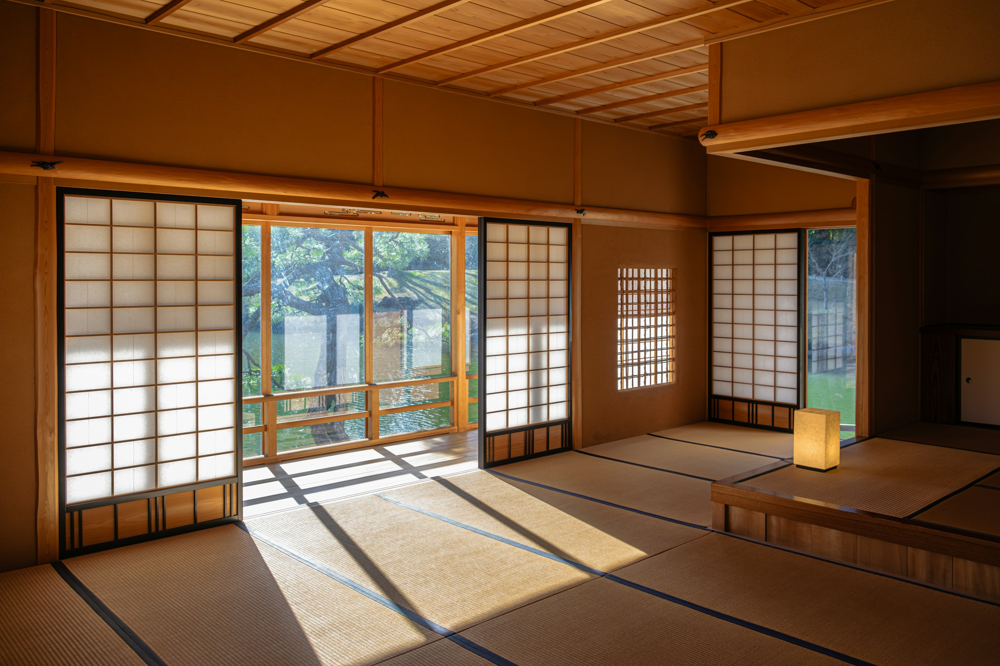
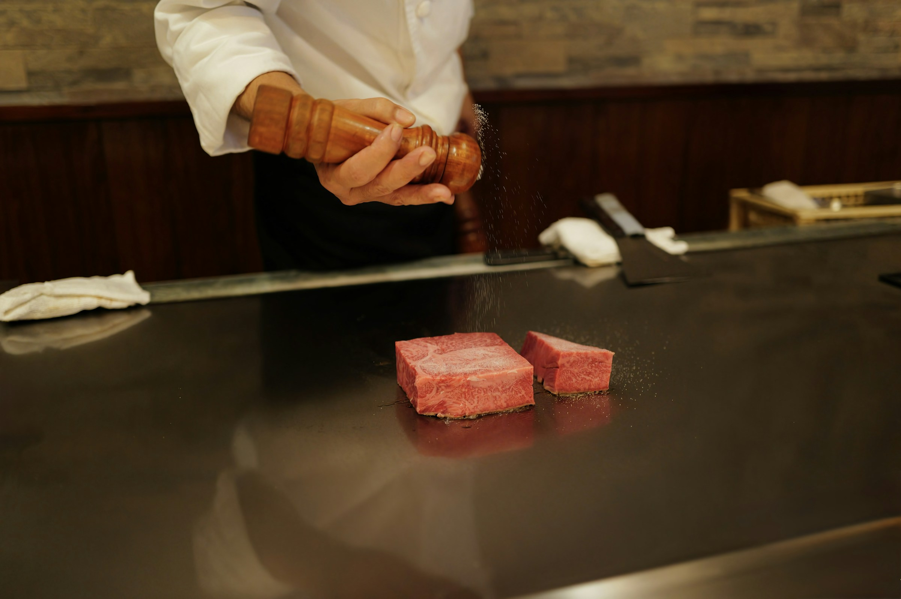
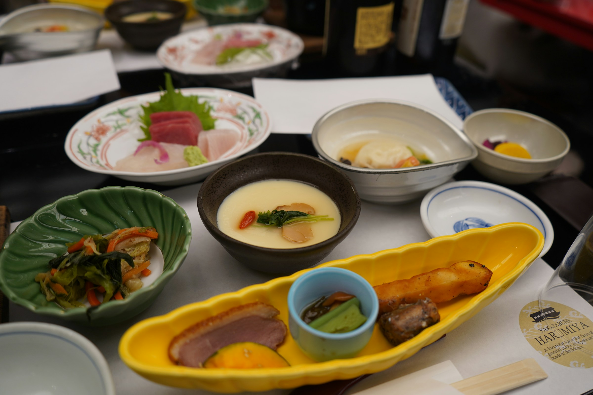
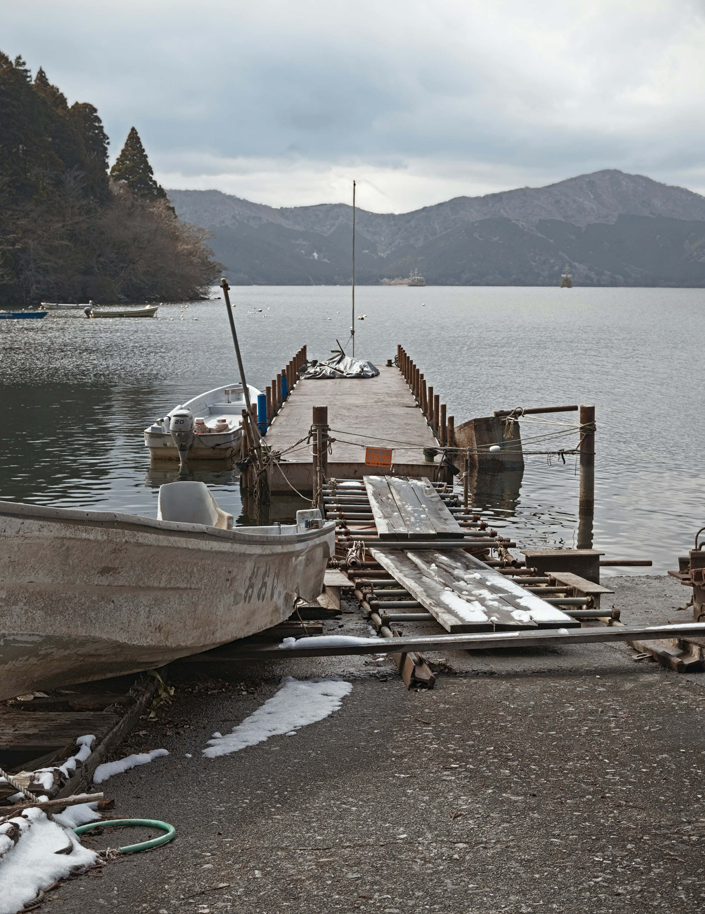
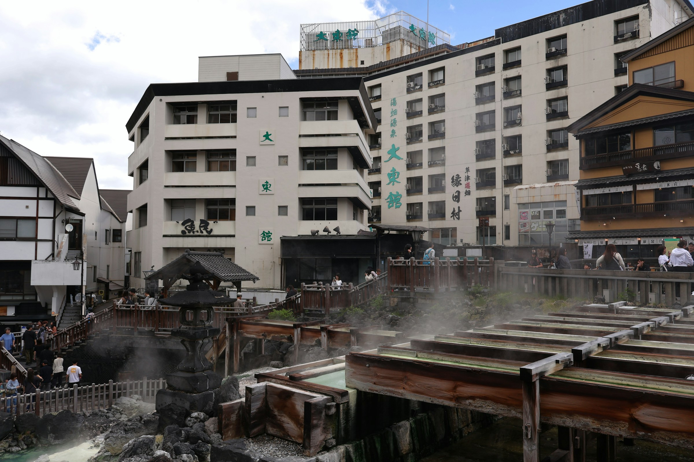
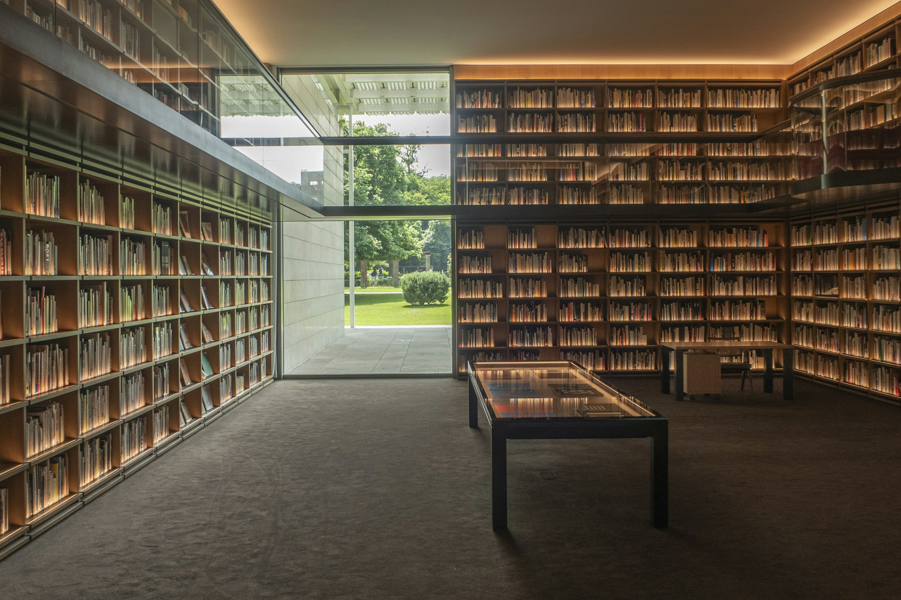

ひと漣の、贅沢。
Luxury, in a single ripple.
A morning when a single ripple breaks the still water.水面に、ひと漣の立つ朝がある。
水面に、ひと漣の立つ朝がある。A morning when a single ripple breaks the still water.
朝の凪と夕の凪のあいだ、水面と一緒に時間が止まる。Between the morning calm and the evening calm, time rests upon the water.
瀬戸内のちいさな島に、漣はあります。Sazanami sits on a small island in the Seto Inland Sea.
全22室、潮と火と書、そして波音だけの宿。Twenty-two rooms. Tide, fire, books — and the sound of waves.

朝、昼、夜。Morning, afternoon, evening.

Where fire meets the sea.火が、海と出会う場所。
潮 -ushio-
薪火と発酵が、夕べを描く。Wood fire and fermentation, drawing the evening.

Breakfast in morning calm.朝凪の食卓。
朝餉の間 -asage-no-ma-
朝凪の海と、土鍋ごはん。The morning sea, and rice from the donabe pot.
When sunset becomes the chair.夕陽が椅子になる時間。
凪の間 -nagi-no-ma-
茶と酒と、夕陽の時間。Tea, sake, and the hour of sunset.
五つの場所が、ここにあります。Five places, here.
-

水鏡Mizukagami The Mirror水鏡
-

潮の湯Ushio-no-Yu The Salt Bath潮の湯
-

文の間Fumi-no-Ma The Library文の間
-
舟屋Funaya The Boathouse舟屋
-
手当ての間Teate-no-Ma The Care手当ての間